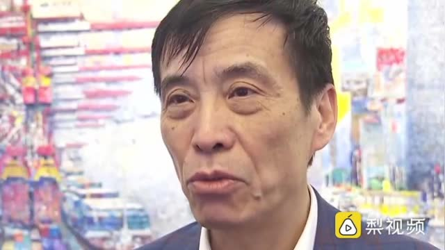

拍摄人的观察能力，推理能力，反应能力，语言能力都非常强

ETF拯救世界
2020-01-16
ETF拯救世界
2020-01-16
阿根廷队梅西都要跟阿圭罗一个房间，中国队凭什么？省点钱抓青训不好吗？  评论配图
评论配图

@新浪财经:
【#足协主席要求提升国脚待遇# ：球员一人住一间，工作人员挤一挤，聘中国厨师】此次中国国奥队征战奥预赛，足协主席陈戌源看到队内安排两名队员住一个房间后，立刻告诉管理人员，队员要一人一个房间，工作人员可以挤一挤。另外，陈戌源还通过个人渠道聘请了中国厨师为球队服务，并表示：“吃不好，会有意见的。”@梨视频体育  梨视频体育的秒拍视频
梨视频体育的秒拍视频

144万次播放
01:04
ETF拯救世界
2020-01-16
今天我一直在想一件事，做为人类，我们是希望什么人挣钱。
亲戚吗，不一定。春节聚会的时候，有些亲戚跟你说他发财了你心里未必会开心。
朋友，同事吗，也未必。
相反，有些人赚钱你会特别生气，就是那些你讨厌甚至恨的人。
即使你不讨厌的一个陌生人，听说他赚钱了，你也可能会心里不舒服。
那么我们希望什么人赚钱呢。
第一个当然是自己，不多说。
第二个是那个人赚钱了自己能分点。有时候分少了也生气，得分的够多。
第三个，就是自己喜欢的人。无论这个人是不是自己的亲戚朋友同事还是陌生人。
只要你喜欢他，就会希望他多挣钱，过的更好一点。这种喜欢是真的喜欢，跟他能不能分点给自己，自己能不能获益毫无关系。
所以判断自己是喜欢，还是讨厌一个人，是不是真爱，看自己是不是希望他发财，过的越来越好就能判断了。
我说一句真心话：
我希望在座的各位（除了那几个坏人）都赚钱，赚好多钱。真的。 抽奖详情
抽奖详情
亲戚吗，不一定。春节聚会的时候，有些亲戚跟你说他发财了你心里未必会开心。
朋友，同事吗，也未必。
相反，有些人赚钱你会特别生气，就是那些你讨厌甚至恨的人。
即使你不讨厌的一个陌生人，听说他赚钱了，你也可能会心里不舒服。
那么我们希望什么人赚钱呢。
第一个当然是自己，不多说。
第二个是那个人赚钱了自己能分点。有时候分少了也生气，得分的够多。
第三个，就是自己喜欢的人。无论这个人是不是自己的亲戚朋友同事还是陌生人。
只要你喜欢他，就会希望他多挣钱，过的更好一点。这种喜欢是真的喜欢，跟他能不能分点给自己，自己能不能获益毫无关系。
所以判断自己是喜欢，还是讨厌一个人，是不是真爱，看自己是不是希望他发财，过的越来越好就能判断了。
我说一句真心话：
我希望在座的各位（除了那几个坏人）都赚钱，赚好多钱。真的。